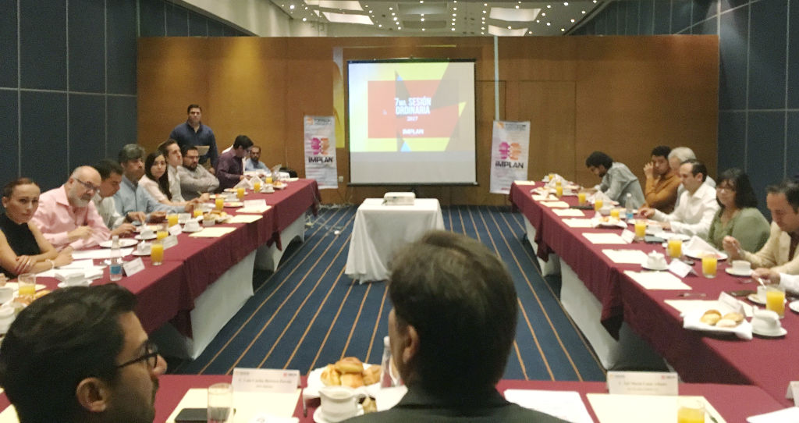

En Sesión Ordinaria de Consejo Directivo el Instituto Municipal de Planeación y Competitividad realizó este viernes la presentación del Índice Básico de Ciudades Prósperas para Torreón, un documento elaborado por la Organización de las Naciones Unidas para los Asentamientos Humanos (ONU Hábitat), en el 2016.
La sesión fue dirigida por un especialista de ONU Hábitat, quien dio a conocer los resultados de este estudio que se realizó con el apoyo del INFONAVIT en 152 municipios de México.
ONU-Hábitat describe la ciudad próspera como “el lugar donde los seres humanos encuentran satisfacción a sus necesidades básicas, donde se provee de los servicios públicos esenciales y donde existen oportunidades y condiciones de bienestar”.
De acuerdo con los resultados el Índice de Prosperidad Urbana para Torreón es de 55.51, mientras que para la Zona Metropolitana de la Laguna es de 53.33 sobre 100, ambos cayendo en una escala global de prosperidad “moderadamente débil”. En esta categoría se encuentran ciudades como Sao Paulo en Brasil, Bangkok en Tailandia, Manila en Filipinas, Quito en Ecuador o Yerevan en Armenia.
La prosperidad urbana se mide en seis dimensiones
- En Productividad la calificación lograda es de 59.88.
- En Infraestructura Torreón recibe una calificación moderadamente fuerte de 63.4, sobresaliendo la infraestructura de vivienda (80.63).
- En Calidad de vida, una dimensión moderadamente fuerte con calificación de 66.25, sobresale educación como una gran fortaleza (89.09) por una alta alfabetización y escolaridad. Los factores de salud se encuentran en un rango medio al igual que la accesibilidad a espacios públicos.
- En equidad e inclusión social la calificación es de 71.11, que es la dimensión más sólida, sobresaliendo la inclusión de género en la educación con 93.47. Sin embargo la pobreza y la desigualdad medida en equidad económica sigue siendo una asignatura pendiente.
- Sostenibilidad ambiental es uno de los principales retos de acuerdo al estudio de ONU Hábitat, porque si bien hay una fortaleza en el manejo de residuos sólidos (87.86), en calidad del aire muestra una calificación de 45.
- Gobernanza y legislación urbana es una dimensión débil en nuestra ciudad. Si bien muestra calificaciones medias en participación y rendición de cuentas, el más bajo es el factor de gobernanza en la urbanización, medido por la expansión urbana ya que para ONU Hábitat el crecimiento urbano es aceptable, siempre y cuando no sea mayor que la tasa de crecimiento de la población.
Fotografías
